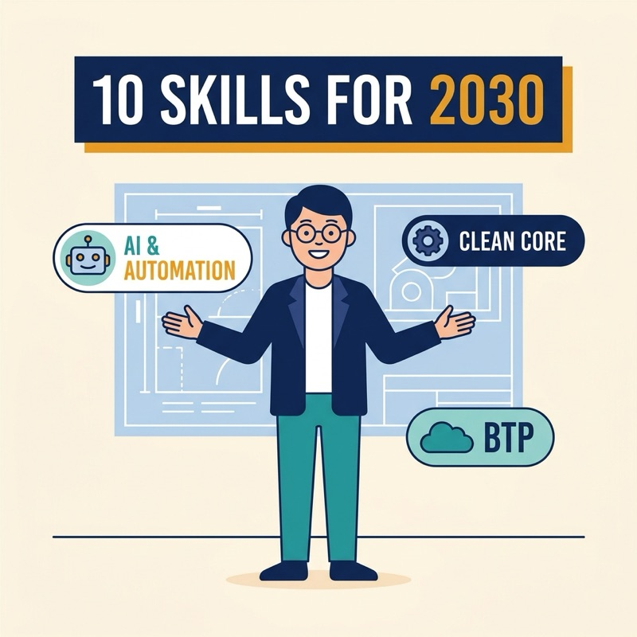
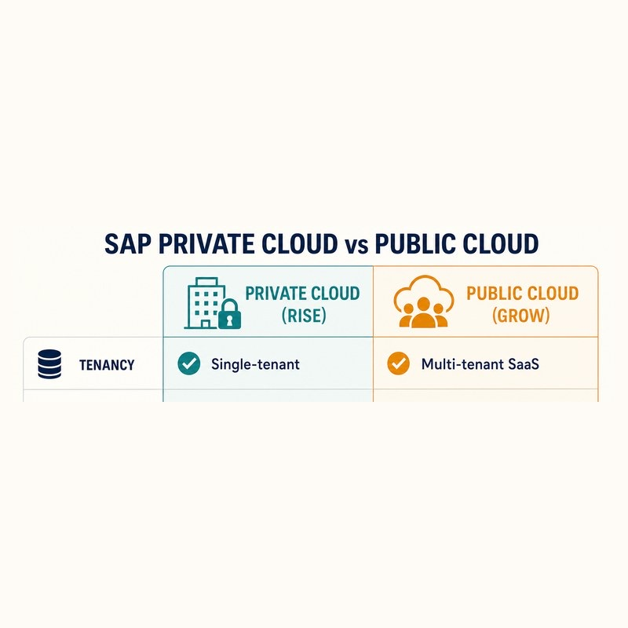
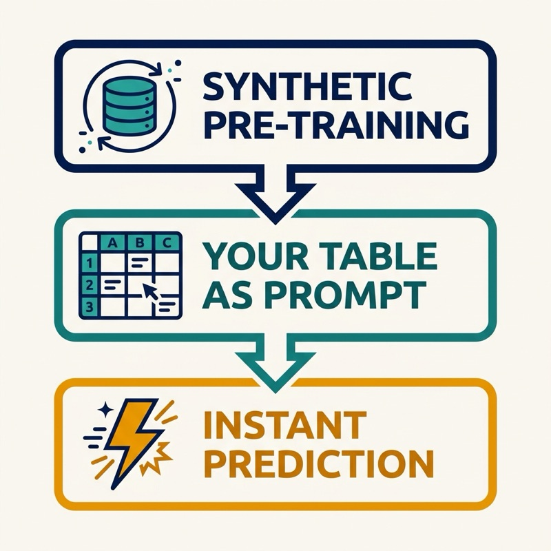
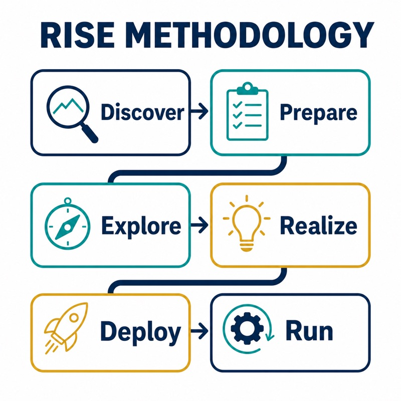
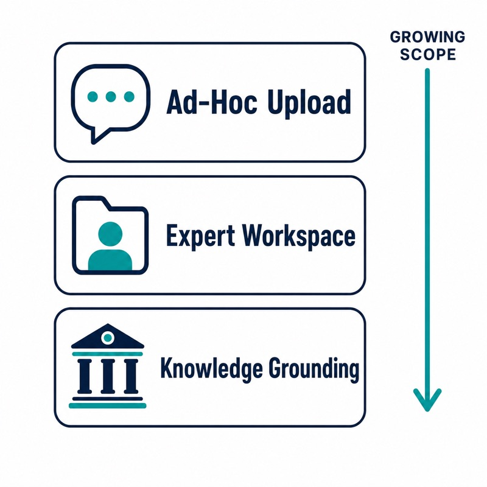
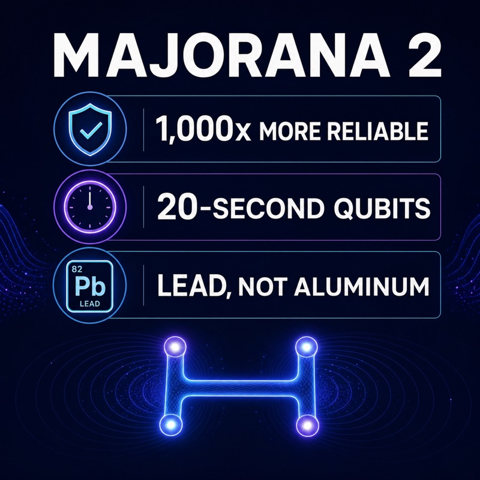
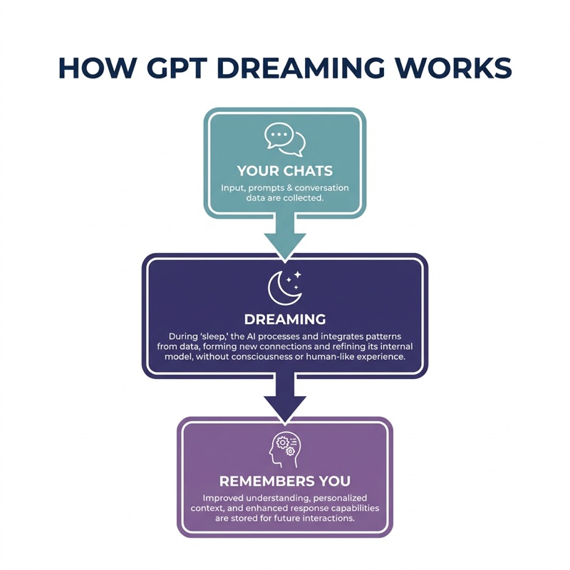
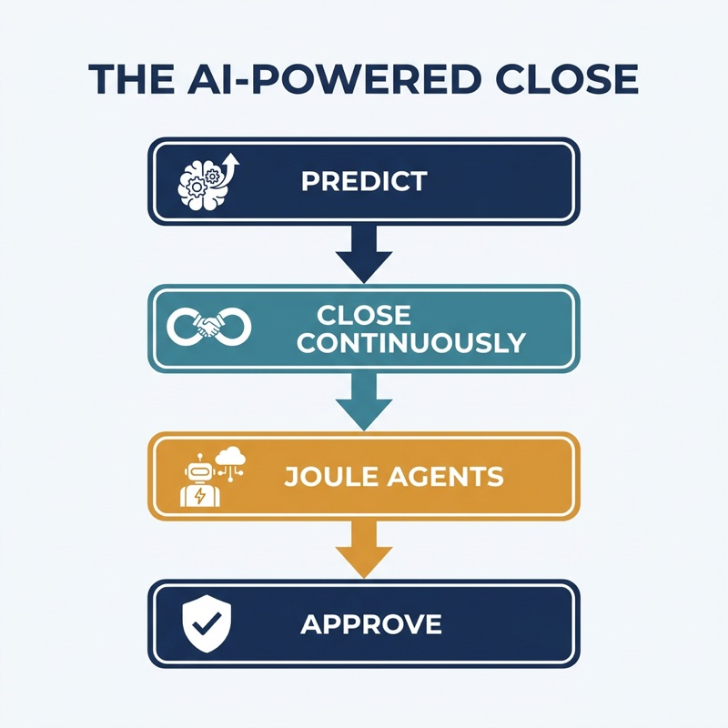

vous cherchez un consultant de classe mondiale ?
Nos Services
Solutions SAP
Des implémentations SAP complètes aux migrations S/4HANA et à l'optimisation FICO, nous guidons les organisations dans des transformations à l'échelle de l'entreprise avec une expertise éprouvée en optimisation des processus et modernisation des systèmes.
IA & Automatisation
Nous sommes pionniers en solutions d'intelligence artificielle qui combinent des technologies IA de pointe avec une compréhension approfondie des affaires pour automatiser les processus, améliorer la prise de décision et favoriser l'excellence opérationnelle.
Transformation Financière
Nous menons des transformations financières de bout en bout, de la réingénierie des processus aux implémentations de systèmes, modernisant les opérations financières tout en assurant la continuité des affaires et une performance améliorée.
Transformation Numérique
Nous aidons les organisations à planifier et exécuter leur transition vers des modèles d'affaires numériques, offrant un conseil stratégique et des feuilles de route technologiques complètes alignées sur les objectifs d'affaires.
Leadership de Projet
Nous fournissons une supervision experte et une coordination d'initiatives technologiques complexes, assurant une livraison réussie grâce à des méthodologies éprouvées, la gestion du changement et l'engagement des parties prenantes.
Solutions Personnalisées
Nous créons des solutions logicielles sur mesure et des produits technologiques innovants qui répondent à des défis d'affaires spécifiques et à des opportunités de marché grâce à une expertise dédiée en R&D et développement.
Approuvé par des Organisations de Premier Plan


Médias
CTO: Confession d'un Optimiste Technologique
Histoires réelles. Leadership audacieux. Avenir meilleur. Animé par David Laborieux.
Apple Podcasts Spotify YouTubeDerniers articles de blog
-

LE CONSULTANT SAP EN 2030 : 10 COMPÉTENCES ET STRATÉGIES QUI DÉFINIRONT LA PROCHAINE ÈRE
De SAP Joule qui économiserait 1,5 heure par jour, au clean core, BTP, au modèle d'IA tabulaire RPT-1 et à l'échéance 2027, voici les 10 compétences et stratégies que les consultants SAP et les leaders d'entreprise doivent maîtriser pour l'horizon 2030.
-

CLOUD PRIVÉ SAP VS CLOUD PUBLIC : APPROCHES DE LIVRAISON ET COMPÉTENCES DES CONSULTANTS EXPLIQUÉES
Le cloud privé SAP (RISE) et le cloud public (GROW) ne sont pas que deux options d'hébergement. Ils exigent des méthodes de livraison différentes et des compétences de consultants différentes. Un guide clair sur comment chacun est livré et quelle expertise chacun requiert.
-
LE 'CERVEAU' DU ROBOT OPTIMUS DE TESLA : COMMENT GROK, FSD ET LA PUCE AI5 FONCTIONNENT ENSEMBLE
Optimus de Tesla fonctionne sur un cerveau en deux parties : Grok pour le raisonnement et les réseaux neuronaux dérivés de FSD pour le corps, alimentés par la nouvelle puce AI5 dont Musk dit qu'elle offre 40 fois la performance de son prédécesseur. Voici ce qui est réellement confirmé et ce qui relève encore du battage médiatique.
-

MODÈLES DE FONDATION TABULAIRES EXPLIQUÉS : GUIDE DU DÉBUTANT POUR TABPFN ET TFMS
Les modèles de fondation tabulaires comme TabPFN prédisent sur un tableur en un seul passage, sans entraînement, jusqu'à 5000x plus vite que les méthodes traditionnelles. Un guide clair sur ce que sont les TFMs, comment ils fonctionnent et quand les utiliser.
-
SAP CFO : LES DÉPENSES DE TOKENS IA 'GRIMPENT EN FLÈCHE'. VOICI CE QU'IL VEUT DIRE
Le CFO de SAP dit que les dépenses de tokens IA grimpent en flèche, et les vrais retours ne viendront que lorsque l'IA dépassera les chatbots. Voici pourquoi l'IA finance et supply chain est si coûteuse, et ce que cela signifie pour votre budget IA.
-
LE MONDE CORPORATIF APRÈS L'AGI : À QUOI POURRAIT RESSEMBLER L'ENTREPRISE AUTONOME
Altman et Amodei prédisent tous deux la première entreprise d'un milliard de dollars avec une seule personne, et le marché des agents IA devrait passer de 10,9G$ à 182,9G$ d'ici 2033. Un regard réaliste sur ce que pourrait devenir le monde corporatif à l'approche de l'AGI et de l'entreprise autonome.
-
POURQUOI L'IA PATINE À ÉCHELLE : LE PROBLÈME DE MODÈLE OPÉRATIONNEL QUE LES DSI NE PEUVENT IGNORER
Seulement 21% des organisations ont une gouvernance mature des agents IA et 74% ne peuvent prouver le ROI. Le blocage de l'IA à échelle est le modèle opérationnel, pas la technologie. Ce que les DSI leaders changent, avec des exemples réels de Levi Strauss et Jabil.
-

MÉTHODOLOGIE RISE WITH SAP, EXPLIQUÉE : LES 6 PHASES DE LA NOUVELLE APPROCHE DE LIVRAISON DE SAP
Apprenez comment l'approche de livraison assistée par IA de SAP structure une transformation cloud : les six phases de Discover à Run, les portes de qualité entre elles, les sept assistants IA qui réduisent l'effort de migration, et les idées fausses qui font dérailler les projets.
-
SHOPIFY, AIRBNB, COINBASE : POURQUOI LES ENTREPRISES PASSENT À DES MODÈLES IA MOINS CHERS
La même charge de travail IA coûte 4811$ sur Claude et 544$ sur GLM. Shopify a réduit ses coûts de 75 fois avec Qwen et Coinbase a divisé par deux ses dépenses IA. Dans les coulisses du passage des entreprises aux modèles IA moins chers, les chiffres vérifiés, et les risques que la liste virale omet.
-
PEUT-ON VIBE CODER UN ERP ? CE QUE 5600 APPLICATIONS CONSTRUITS PAR IA RÉVÈLENT
Une analyse de 5600 applications vibe-codées déployées a trouvé 2000 vulnérabilités critiques. Pourtant une couche de la pile ERP est véritablement en train d'être vibe-codée en ce moment. Voici où l'idée échoue, et où elle gagne déjà.
-
SAP GÈLE LES EMBAUCHES ET COUPE LES DÉPLACEMENTS POUR FINANCER L'IA. VOICI CE QUE CELA SIGNALE VRAIMENT
Le conseil exécutif de SAP a restreint les nouvelles embauches aux rôles IA uniquement et coupé les budgets de déplacement le 2 juillet 2026. Voici ce que le mouvement révèle sur la nouvelle structure organisationnelle, la pression concurrentielle derrière, et ce que cela signifie pour clients et partenaires.
-

SAP JOULE POUR CONSULTANTS ET CUSTOM KNOWLEDGE GROUNDING, EXPLIQUÉ
SAP Joule pour Consultants connaît 18M+ pages de contenu SAP par défaut, mais rien sur la méthodologie propre de votre firme. Voici comment Custom Knowledge Grounding comble cet écart, et comment il diffère d'Expert Workspace.
-
HOW AI IS CUTTING SAP S/4HANA MIGRATION TIMELINES FROM YEARS TO MONTHS
Custom code remediation used to take 12 to 24 months. AI tools now do it in days, and AI-assisted data migration has cut effort in half in real projects. Here is exactly how, tool by tool.
-
WORKDAY STOCK FELL 43% IN 2026. ITS AI AGENT BUSINESS GREW 200%.
Workday had its worst stock year since its 2012 IPO while its agentic AI annual contract value grew more than 200%. Here is what the gap between the stock chart and the product data actually reveals.
-
HEADLESS ERP: WHY 70% OF EXECUTIVES SAY TRADITIONAL ERP ISN'T THE FUTURE
A 4,295-executive survey found 70% do not see traditional ERP as the future. Here is what headless ERP actually means, why funded startups like Tailor are betting on it, and the "composable regret" risk no one warns you about.
-
SAP'S 38% STOCK DROP: WHAT THE MARKET IS ACTUALLY TELLING YOU ABOUT ENTERPRISE ERP
SAP stock fell 38% in six months while posting record profits and 90% free cash flow growth. The disconnect between market sentiment and business fundamentals reveals something important about the pace of enterprise cloud adoption.
-
SAP ECC TO S/4HANA MIGRATION: CHOOSING YOUR PATH WHILE GETTING READY FOR AI
ECC mainstream support ends December 2027 — and 60% of companies are skipping Joule AI entirely during migration. Here is how to choose greenfield, brownfield, or bluefield and build AI readiness in from day one.
-
UBTECH WALKER S2: THE HUMANOID ROBOT GOING TO WORK IN REAL FACTORIES
UBTech shipped 1,079 humanoid robots in 2025 — a 35,000% year-over-year surge — with Foxconn, BYD, Geely, and Airbus among its customers. Here is what the Walker S2 can actually do today, and what the Siemens partnership means for 2026 scale targets.
-

MAJORANA 2, EXPLAINED SIMPLY: HOW MICROSOFT'S TOPOLOGICAL QUANTUM CHIP WORKS (WITH EXAMPLES)
Microsoft unveiled Majorana 2 in June 2026, claiming a 1,000-fold reliability gain and 20-second qubits. Learn what a topological qubit is, how Majorana zero modes protect quantum information, and why some scientists are still waiting to be convinced.
-

GPT DREAMING, EXPLAINED SIMPLY: HOW CHATGPT'S NEW MEMORY WORKS (WITH EXAMPLES)
A simple, example-driven explainer of GPT Dreaming, the background memory system OpenAI gave ChatGPT in June 2026. Learn what dreaming really is, how it keeps what ChatGPT knows about you current between chats, the controls you have, and the one common misconception to avoid.
-

SAP JOULE AND PREDICTIVE CLOSING, EXPLAINED: HOW AI TURNS MONTH-END INTO A CONTINUOUS PROCESS
A plain-language guide to SAP Joule and predictive closing: what predictive accounting and the predicted close actually are, how Joule's AI agents orchestrate the financial close, a worked example with the Accounting Accruals Agent, and the four close types every finance team should know.
-
A GOVERNMENT JUST SWITCHED OFF A FRONTIER AI MODEL: INSIDE THE ANTHROPIC FABLE 5 AND MYTHOS 5 BAN
On June 12, 2026, the US government ordered Anthropic to suspend all access to Fable 5 and Mythos 5 for any foreign national worldwide, including its own employees. Anthropic disabled both for every customer. Here is what happened, the dispute over why, and what it means for any enterprise building on frontier AI.
-
THE ROADMAP TO THE AUTONOMOUS ENTERPRISE: 5 STAGES, AND WHY FEWER THAN 3% HAVE ARRIVED
Fewer than 3% of enterprises have reached full autonomous operations, and 88% of AI agent projects never reach production. Here is the stage-by-stage roadmap to the autonomous enterprise, from first pilots to orchestrated agents, and the governance discipline that decides who actually makes it.
-
IKEA DIDN'T REPLACE 8,500 WORKERS WITH AI. IT DID SOMETHING SMARTER
IKEA's Billie chatbot now resolves 47% of customer inquiries, but the company did not lay off a single one of the 8,500 affected call-centre workers. It reskilled them into remote interior design advisors, a channel now worth 1.3 billion euros a year. Here is how an automation story became a growth story.
-
WHAT HAPPENED TO PROMPT ENGINEERING: FROM A $375K JOB TITLE TO A SKILL INSIDE EVERYONE'S JOB
Prompt engineering was the job of 2024, with roles advertised up to $375K. By 2026 it collapsed as a job title, ranking second to last in a 31,000-person hiring survey. But the skill did not die. It dissolved into everyone's work and leveled up into context engineering.
-

GOVERNANCE PITFALLS IN S/4HANA FINANCE TRANSFORMATIONS: WHY ONLY 8% FINISH ON TIME
Only 8% of S/4HANA migrations finish on schedule, and the root cause is rarely technical. It is weak governance. Here are the seven governance pitfalls that derail S/4HANA Finance transformations, from scope creep to fragmented data ownership, and how to avoid them before the 2027 ECC deadline.
-

GENERATIVE AI ETHICS: THE 7 BIGGEST RISKS LEADERS CAN'T IGNORE IN 2026
A landmark study found AI assistants misrepresent news content 45% of the time, and 62% of organizations faced a deepfake attack last year. Here are the seven biggest generative AI ethics risks of 2026, the verified numbers behind them, and how leaders can govern them.
-

THE FUTURE OF PREDICTIVE ANALYTICS: FROM FORECASTS TO AUTONOMOUS DECISIONS
Gartner predicts 40% of enterprise apps will carry task-specific AI agents by the end of 2026, up from under 5% in 2025. Here is how predictive analytics is merging with agentic AI, the market numbers behind a $17.5B to $100B jump, and the governance catch most companies are missing.
-

FOXCONN'S MOMCLAW: HOW HUNDREDS OF AI AGENTS ARE ALREADY RUNNING THE FACTORY FLOOR
NVIDIA's new FOX blueprint is live on Foxconn's factory floor as MoMClaw, a system connecting hundreds of AI agents to production equipment. Foxconn projects 80% faster root-cause analysis, 15% higher productivity, and 10% fewer machine failures. Here is how it works, and what to verify before believing the numbers.
-

THE 3-4 DAY WORKWEEK IS BECOMING STANDARD: WHAT THE 2050 DATA ACTUALLY SHOWS
Half of workers worldwide expect a 3-4 day week by 2050, and the trial evidence is no longer theoretical. Here is what Iceland, the UK trials, the Germany outlier, and the 32-hour rule reveal, plus why AI is finally funding the extra day off.
-

YOUR 5-YEAR-OLD WILL HAVE 7 CAREERS: WHY LIFELONG REINVENTION IS THE NEW NORMAL
Careers now span 50+ years and the education-to-retirement model is dead. With 39% of core skills set to change by 2030, here is why continuous reskilling and reinvention have become the baseline skill of modern work.
-

ANTHROPIC CLAUDE FABLE 5: THE FIRST PUBLIC MYTHOS-CLASS AI MODEL EXPLAINED
Anthropic just released its most powerful model to the public, wrapped in hard safety guardrails. It runs autonomously for days, tops finance and analytics benchmarks, and costs double Opus 4.8. Here is what it means for the enterprise.
-

SAP JOULE IN 2026: THE TOP 5 USE CASES DELIVERING REAL ENTERPRISE RESULTS
From 80% faster cash reconciliation to real-time supply chain risk response — the five Joule agent use cases that are delivering measurable results in live enterprise deployments today.
-

WILL AI KILL ERP? THE ANSWER IS MORE NUANCED THAN THE HEADLINES SUGGEST
AI won't kill ERP — it will hollow it out and rebuild it. From Gartner's 62% adoption forecast to SAP's 200+ autonomous agents, here is what the evidence actually says.
-

SAP ECC SUPPORT ENDS DECEMBER 2027: WHAT LEADERS MUST DO BEFORE IT'S TOO LATE
SAP ECC mainstream maintenance ends December 31, 2027 — final, no extensions. Over 60% of customers are not ready. Here is the strategic action plan enterprise leaders need now.
-

SAP INVESTS IN N8N AT $5.2B VALUATION: INSIDE THE PARTNERSHIP RESHAPING ENTERPRISE AI
SAP made a strategic investment in n8n at a $5.2B valuation at SAP Sapphire 2026. What it means for Joule Studio, SAP BTP, and the future of enterprise AI workflow automation.
-

TESLA TERAFAB: INSIDE THE $25B PLAN TO BUILD AI CHIPS AT SCALE
Tesla, SpaceX, and xAI unveiled Terafab — a $25B chip fab in Austin targeting 1 terawatt of AI compute annually. AI5 chips, Optimus robots, and space data centers.
-

SAP RISE: The Complete Guide to Enterprise Cloud Transformation
SAP RISE bundles S/4HANA Cloud, BTP, and managed services into one subscription. Complete 2026 guide to cloud transformation.
-

AUTONOMOUS AI AGENTS IN ENTERPRISE: THE 2026 REVOLUTION
57% of companies already have AI agents in production. Discover the $4.4T opportunity, real ROI data, and how to implement autonomous agents without wasting money.
-

The Agentic Loop: How AI Decides and Acts
Agentic AI isn't just magic—it's a sophisticated process of continuous reasoning and execution transforming business workflows.
-

SAP Joule: The Enterprise AI Copilot Reshaping How We Work
SAP Joule isn't just another AI chatbot—it's a fundamental reimagining of how humans interact with enterprise applications.
-

AI in Finance: Beyond the Hype
A practical look at where AI delivers measurable value in corporate finance, from AP automation to cash flow forecasting.
-

The Future of SAP S/4HANA
With SAP's 2027 deadline approaching, organizations face one of the most critical technology decisions of the decade.
-

Autonomous AI Agents in Enterprise: The 2026 Revolution
57% of companies already have AI agents in production. Discover the $4.4T opportunity, real ROI data, and how to implement autonomous agents without wasting money.
Contactez-nous

Pionniers du Progrès, Ingénieurs du Succès.
Conseil technologique stratégique pour l'entreprise moderne.